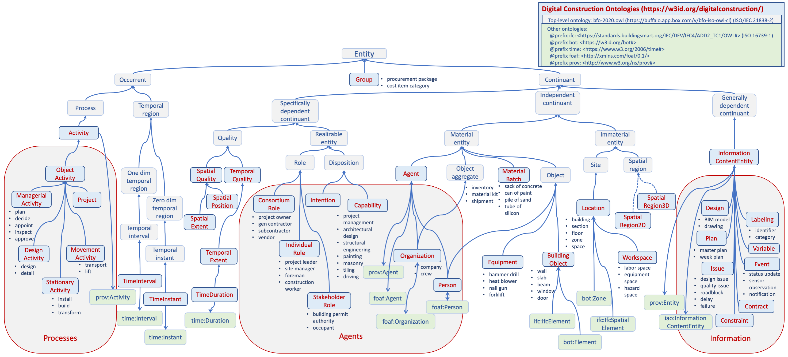

Digital Construction Ontologies
|
This version |
0.5 (horizontal and vertical segmentation) |
|
Previous version |
|
|
Status |
Ontology Specification Draft |
Terminology for the representation of digitalized construction and renovation processes
Digital Construction Ontologies have been defined to work as an enabler of semantic interoperability between systems in the construction and renovation domain. It defines basic terms related to built assets, building design, construction project planning, and construction planning, including the agents, resources and spatio-temporal aspects. The definitions of the ontologies rely heavily on standardized or otherwise established ontologies; the correspondances of Digital Construction Ontologies with other ontologies are provided explicitly in separate alignment modules.
The specific objective is to address the representation of digitalized construction processes. Digital technologies are increasingly used in all stages of construction lifecycle, from scanning, building information modeling and procurement to supply-chain management and construction management. Mobile devices, sensors and imaging solutions provide a flood of instantaneous data from the project execution. Digitalized construction projects can employ a wide range of task-specific point solutions that can significantly enhance the productivity and quality of individual tasks. However, the improvement of overall construction productivity depends even more on what happens between the tasks: how the information produced in one task can be utilized in other tasks. By improving the semantic interoperaability, the Digital Construction Ontologies are an enabler of smoother information sharing and eventually also higher productivity.
Ontology modules (https://w3id.org/digitalconstruction/0.5/)
| Ontology module | Namespace | Prefix | Description |
|---|---|---|---|
| Entities | https://w3id.org/digitalconstruction/0.5/Entities# | dice: | Entities with identifiers, classifications, breakdowns, and groupings; activities and related flows. |
| Agents | https://w3id.org/digitalconstruction/0.5/Agents# | dica: | Actors, stakeholders, roles, legal persons, capabilities, capacities |
| Information | https://w3id.org/digitalconstruction/0.5/Information# | dici: | Information content entities, information containers, including designs, plans, events, and issues |
| Processes | https://w3id.org/digitalconstruction/0.5/Processes# | dicp: | Processes |
| Contexts | https://w3id.org/digitalconstruction/0.5/Contexts# | dicc: | Multi-contexts data: planned/actual, as-designed/as-built, levels of detail |
| Variables | https://w3id.org/digitalconstruction/0.5/Variables# | dicv: | Variables and constraints to support the representation of incomplete plans and management of changes |
| OccupantBehavior | https://w3id.org/digitalconstruction/0.5/OccupantBehavior# | dicob: | Occupant behavior and comfort |
| IndoorAirQuality | https://w3id.org/digitalconstruction/0.5/IndoorAirQuality# | diciaq: | Indoor air quality |
| BuildingAcoustics | https://w3id.org/digitalconstruction/0.5/BuildingAcoustics# | dicba: | Building acoustics |
| EnergySystems | https://w3id.org/digitalconstruction/0.5/EnergySystems# | dices: | Energy systems of buildings |
| Building Materials | https://w3id.org/digitalconstruction/0.5/BuildingMaterials# | dicbm: | Building materials; layers and properties of materials |
| Lifecycle | https://w3id.org/digitalconstruction/0.5/Lifecycle# | dicl: | Evolution of information over construction lifecycle and refinement through LOD levels |
Aligment modules
| Alignment module | Ontology | Namespace | Prefix | Description |
|---|---|---|---|---|
| Alignment/BFO | BFO | http://purl.obolibrary.org/obo/ | obo: | Fundamental categories |
| Alignment/IFC | ifcOWL | https://standards.buildingsmart.org/IFC/DEV/IFC4/ADD2_TC1/OWL | ifcowl: | BIM models |
| Alignment/OWL-Time | OWL-Time | https://www.w3.org/2006/time/ | time: | Time intervals and time instants |
| Alignment/FOAF | FOAF | http://xmlns.com/foaf/spec/ | foaf: | Agents and social networks |
| Alignment/Org | Org | https://www.w3.org/TR/vocab-org/ | org: | Organizations, posts, roles |
| Alignment/PROV-O | PROV-O | https://www.w3.org/TR/prov-o/ | prov: | Origin or information |
| Alignment/QUDT | QUDT | http://qudt.org/2.1/schema/qudt | qudt: | Units of measurement |
| Alignment/SSN | SSN SOSA |
http://www.w3.org/ns/ssn/ http://www.w3.org/ns/sosa/ |
ssn: sosa: |
Sensor data and sensor systems |
| Alignment/Saref | Saref Core Saref4Bldg |
https://saref.etsi.org/core/ https://saref.etsi.org/saref4bldg/ |
saref: s4bldg: |
Sensor data and sensor systems, in buildings |
| Alignment/Calidad-Aire | Calidad-Aire | http://vocab.linkeddata.es/datosabiertos/def/ medio-ambiente/calidad-aire |
esair: | City air quality |
Contents of the ontologies
Overview of the scope
Digital construction ontologies aim to capture the relevant objects and properties (relationships and attributes) that can be referred to by people or systems during the management and execution of construction or renovation projects. This includes physical and spatial entities, temporal regions, information contents, agents, activities, and groupings of objects.
The overall scope of Digital Construction Ontologies is shown in the figure below. Most concepts in the figure are from the Entities ontology. The large grey boxes show the areas that specific ontology modules in the Digital Construction Ontologies extend with more specific concepts. The concepts shown in the light-blue boxes in the middle are those defined in Digital Construction Ontologies, the ones in light-grey boxes belong to BFO ISO and the green ones are from other ontologies. The direction of the arrow shows the superclass relation and a two-way arrow means equivalent classes. The texts near to concept boxes suggest possible subclasses.
The top-level organization of the Digital Construction Ontologies ontologies are provided by BFO. It divides the entities into two classes, Occurrent (things taking place in time, such as processes) and Continuant (things taking place in space, such as physical entities or spacial regions). From the perspective of construction management, Activity - a subclass of Process - captures the intentional efforts of an Agent. An Agent can be a Person or an Organization, and can have Capabilities annd assume Roles. The construction process is characterized by a set of InformationContentEntities, such as Designs, Plans, Contracts and Issues.
Labeling: identifiers and categories
Due to the fragmented nature of construction, there can be multiple parties and systems that manage any particular entities at some phase of their lifecycle, and that give identifiers, classifications or other labels to those entities. The exact nature and number of such labelings is highly context dependent. To promote linking and integration between systems in construction projects, the flexible capability to represent the labelings of entities is crucially important.
In Digital Construction Ontologies, any Entity can be associated with a number of Identifiers and Categories. They can be identifiedBy have Globally Unique Identifiers (GUID), and often multiple of them, each given by a different stage or system during its lifecycle. Moreover, objects can also have multiple local identifiers, such as a room number in a building or a control point number in a building automation system or an identifier in another information system.
Objects also belongTo different categories in different classification systems, such as OmniClass, Unicode, CoClass, etc. They can also belong to categories in other information systems, such as being an identifiable entity in a particular project.
The actual nature and number of identifiers is dependent on the context of an object, and it is not possible to define separate properties for each of them in an ontology in a generic way. Therefore both identifier and categories are represented as objects. An identifier has a label (hasLabel) that is a string and it is in relation to some scope (hasScope) which is a Category. For globally unique identifier the scope is a global category such as :Guids, and for local identifiers a more specific category.
The Labeling can also be used to associate case-specific names for any entity, for instance, to be shown in the user interface of a system that stores its data in Digital Construction Ontologies compliant manner. For example, in a location breakdown structure the locations can be associated with names that make sense for the people working in a particular stage of construction.
Composite entities and space-time
Activity-flow relations
Activities have several different kinds of ingredients - often called flows - that have been studied and identified in the field of lean construction. The flows can be classified into transformed objects, material batches, equipment, labor crews, workspaces, information objects, and environmental conditions, and each activity can have several flows in each of these categories. To be executable an activity requires that its ingredients are in a proper state before the execution (preconditions) or during it (e.g., resource reservations). Moreover, the activity transforms the state of some of the ingredients as the result of its execution (effects) - this being the purpose of executing the activity in the first place.
An essential goal is to be able to link different entities to activities since the interest in construction management is in the progress of activity execution but direct, sensor-based observations can mostly be collected from other objects than activities themselves (e.g., sensor data about positions of objects or people, occupancy or locations). A proper linking will enable the derivation of activity execution data from the observations about the linked objects.
The figure above presents the relations in Digital Construction Ontologies ontologies to represent the flows of activities, defined in the Digital Construction Entities and Processes ontologies. The table below gives a detailed description of the flow relations. (Note that dice:hasParticipant is equivalent to BFO's 'has participant', and dice:occursIn BFO's 'occurs in').
| Ontology | Property | Domain | Range | Inverse | Subproperty of |
|---|---|---|---|---|---|
| Entities | dice:hasAgent | dice:Activity | dice:Agent | dice:isAgentIn | dice:hasParticipant |
| dice:hasMaterial | dice:Activity | dice:MaterialBatch | dice:isMaterialIn | dice:hasParticipant | |
| dice:hasEquipment | dice:Activity | dice:Equipment | dice:isEquipmentIn | dice:hasParticipant | |
| dice:hasInformation | dice:Activity | dice:Information | dice:isInformationIn | dice:hasParticipant | |
| dice:occursIn | dice:Activity | dice:Location | dice:hasEnvironment | - | |
| Processes | dicp:hasObject | dicp:ObjectActivity | BFO's 'entity' | dicp:isObjectIn | dice:hasParticipant |
The object of an activity (using dicp:hasObject property) can be, in addition to dice:BuildingObject also anything else that can be a focus of work, such as dice:Location, dice:Group (e.g., for procurement and logistic activities), dice:Activity (e.g., for managerial activities), or dice:InformationContentEntity (e.g., for design and planning activities).
It should be noted that these properties as such allow only a partial representation of the relations of activities and flows. They tell what entities are the ingredients of an activity but do not specify what should be the state of an entity before the execution of an activity (preconditions) or what would be the state after it (effects). The representation of these states require the concepts from the Variables ontologies described below.
Multi-context data
Different aspects of construction - such as building objects, resources, or activities - can be represented in multiple different contexts and often it is interesting to compare the differences between those contexts. Building-related examples are as-designed and as-built contexts for BIM models, or more comprehensively the contexts for different LODs (levels of detail/development). Typical activity-related contexts are planned and actual data of project execution.
Multi-context data is represented using the named graphs of RDF datasets. It is an orthogonal mechanism that allows any objects to be associated with different properties - or even different structures - in different contexts. If needed the multi-context mechanism allows the recording of all differences between planned and actual activities. In addition to the traditionally recorded planned and actual start and end times of activities, it is also possible represent actual activities that do not appear in the plans at all (so-called improvised activities).
Variables and constraints
Much of the essential information in project management or construction management can be represented in the form of constraints, and over significant periods during project execution, the plans can have incomplete information about the exact values of some properties, such as start and end times of tasks, resources assigned to tasks, locations of entities, and so on. To enable the interoperable sharing of such crucial and common information, the ontologies include a possibility to associate a variable to any property of an object and to represent constraints between variables. This representation is completely orthogonal and can be used to enrich objects and properties defined in any existing ontologies.
In the example on the right the properties of an object (shipment1) as defined in the ontology are shown in blue color. Each of those properties is associated with a variable (in red color). The variables again are associated with constraints (in green color) that limit their possible values.

Integration with the broader Semantic Web
Digital Construction ontologies are designed to observe the Linked Data principles, and consequently to enable decentralized publication of construction data by the diverse parties in construction projects.
The ontologies use or are aligened with well-known existing ontologies, as shown in the figure on the right (import relations are shown as solid and reference relations dashed lines). The Basic Formal Ontology (BFO) is imported as the top-level ontology, the BIM models can be provided in ifcOWL or BOT, and concepts from other ontologies such as OWL-Time, PROV-O, FOAF, QUDT, SSN/SOSA, and Saref are used as needed.

Contributing projects
BIM4EEB - BIM-based toolkit for efficient renovation of residential buildings (European Union's H2020 research and innovation programme, grant N. 820660) |
Diction - Development of shared situational awareness in construction projects (Business Finland, Collaborative research project 2018-2020) |
Contributing organizations
- Aalto University, FI
- RI.SE, SE
- SUITE5, GR
- TU Dresden, DE
- University College Cork, IE
- VisuaLynk, FI
- VTT, FI
Contacts
License

Last modified: Wed Mar 17 12:46:19 EET 2021